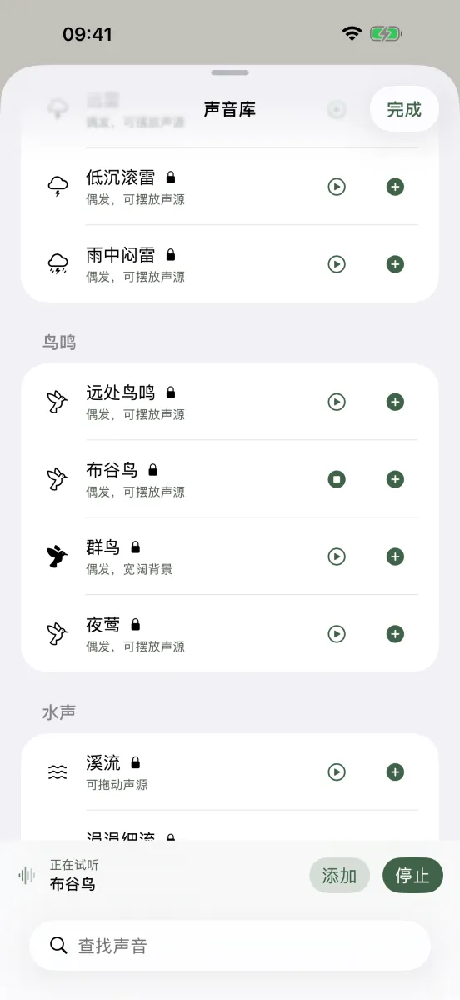
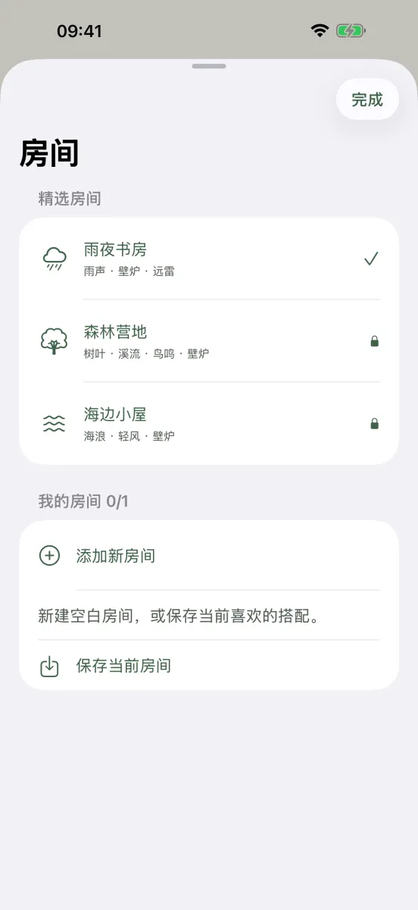

声音有真实位置
在三维听者周围拖动每个声音：左右、前后、上方或下方都可以。也能精确设置方向、仰角和距离。宽阔的环境底声稳定地包围着你。
适用于 iPhone · iOS 18 或更高版本
静室把自然声音摆放在你身边：左侧窗上的雨，前方的溪流，身后不远处的炉火。戴上耳机，开始聆听，再把房间调整到最舒服的样子。

在三维听者周围拖动每个声音：左右、前后、上方或下方都可以。也能精确设置方向、仰角和距离。宽阔的环境底声稳定地包围着你。
雨、雷、鸟鸣、溪流、海浪、风、虫鸣、脚步和炉火。录音片段自然轮换，听久了也不像短循环。所有声音（包括 Pro）都能先试听再添加。
雷声、鸟鸣、水滴和脚步会不时出现。每一种都可以选择偶尔、适中或频繁；脚步还可以持续散步。
从雨夜书房、森林营地、海边小屋开始，或新建一个空白房间。更改自动保存；随时重命名、复制或覆盖已保存的房间。
使用兼容耳机时，转头后定位声音仍停留在原处。普通耳机也能听到固定的空间效果。
无账户、无广告、无统计分析。声音随 App 安装，聆听、编辑和保存都不需要网络。定时结束时轻轻渐弱。



一次性购买 · 不是订阅
价格以你所在地区 App Store 显示为准。